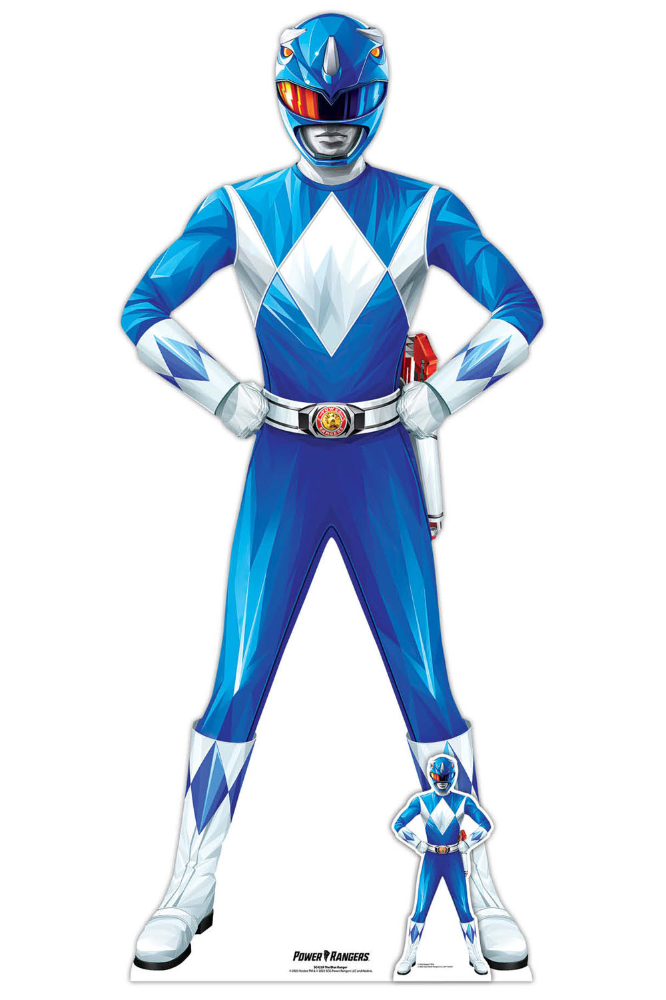

Héroes y aliados
- Ranger Rojo - Líder del equipo.
- Ranger Azul - Experto en tecnología.
- Ranger Amarillo - Valiente y habilidoso.
- Ranger Rosa - Experta en combate.

Villanos
- Rita Repulsa
- Lord Zedd
- Goldar
- Ivan Ooze

Ranger Azul

Es uno de los integrantes del equipo Power Rangers. Se destaca por su inteligencia y sus conocimientos tecnológicos para combatir a los enemigos.